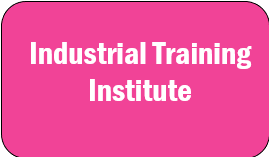

Intermediate refers to the level of schooling between primary and secondary education, or high school and college.
POLYTECHNIC
A polytechnic is a type of higher education institution that typically focuses on providing vocational education and training.

INDUSTRIAL TRAINING INSTITUTE
ITI stands for Industrial Training Institute. It is a technical education institution in India that provides training in various trades such as welding, plumbing, electrical, and more.
PARAMEDICAL
Paramedical refers to a field of healthcare that involves the use of non-physician healthcare professionals to provide medical services. These professionals, known as paramedics, are trained to provide emergency medical care and transport patients to medical facilities.